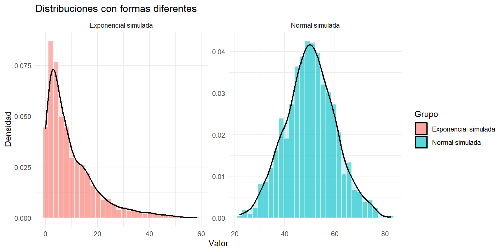
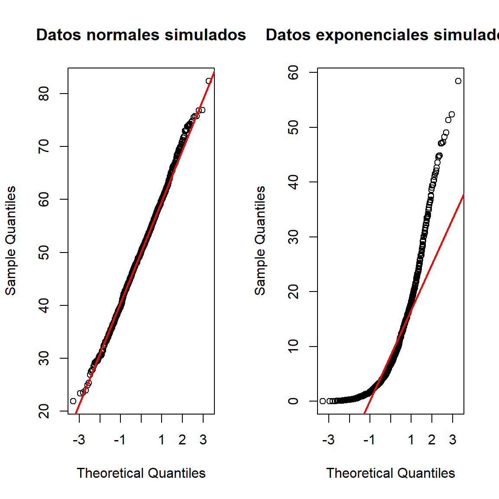
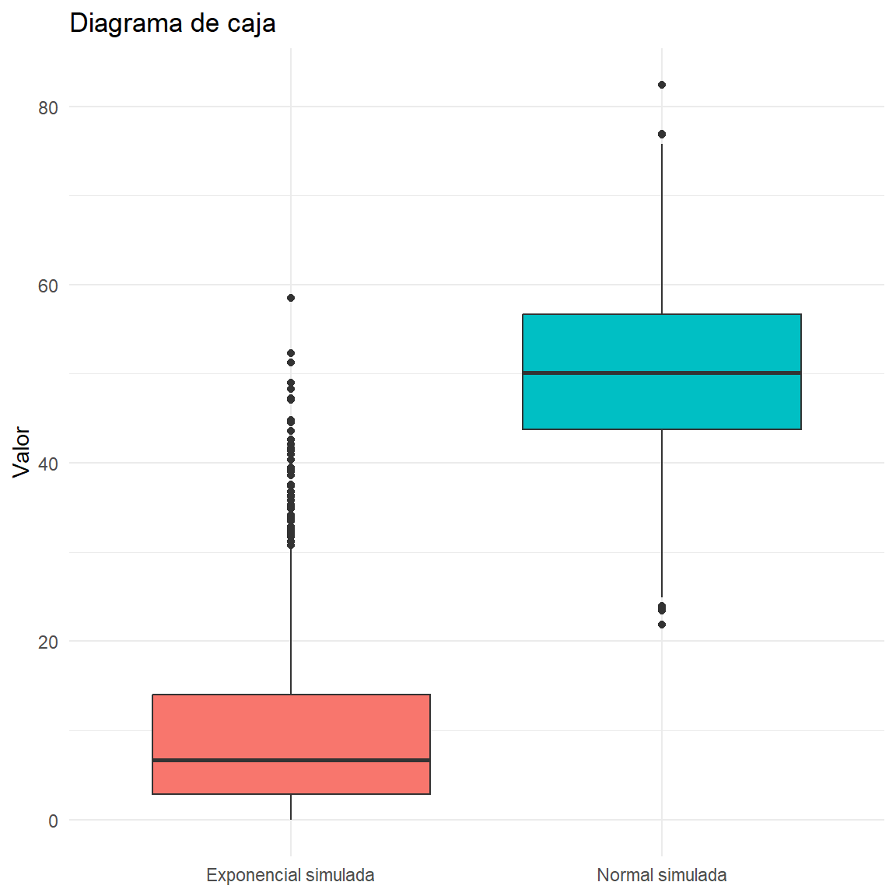

La distribución normal es una distribución de probabilidad continua, simétrica y unimodal, con forma de campana. Se caracteriza por su media (\mu) y desviación estándar (\sigma). Muchas técnicas estadísticas clásicas, por ejemplo, ciertos intervalos de confianza y pruebas t se fundamentan en la normalidad de la población, de los errores o de los residuos, según el procedimiento utilizado.
Evaluar la normalidad no significa comprobar que los datos sean “perfectamente normales”. En la práctica se busca determinar si las desviaciones observadas respecto de una distribución normal son suficientemente importantes para afectar el análisis previsto. Para ello se combinan métodos gráficos, pruebas estadísticas y conocimiento del contexto.
Idea central: no se debe decidir únicamente con un valor p. Conviene revisar el gráfico Q-Q, la forma de la distribución, los valores atípicos, el tamaño de muestra y los supuestos del método estadístico que se desea aplicar.
2 ¿Qué significa normalidad?
Una variable aleatoria X tiene distribución normal si su función de densidad es
f(x)=\frac{1}{\sigma\sqrt{2\pi}}
\exp\left[-\frac{1}{2}\left(\frac{x-\mu}{\sigma}\right)^2\right],
\qquad -\infty < x < \infty,
donde:
\mu es la media poblacional.
\sigma es la desviación estándar poblacional, con \sigma>0.
\sigma^2 es la varianza poblacional.
Sus características principales son:
Tiene forma de campana y es unimodal.
Es simétrica alrededor de la media.
En una normal, media, mediana y moda coinciden.
El área total bajo la curva es igual a 1.
La distribución queda determinada por \mu y \sigma.
Sus colas se aproximan al eje horizontal sin tocarlo.
La regla aproximada 68–95–99,7 establece que, en una distribución normal, alrededor del 68 % de los valores está a una desviación estándar de la media; el 95 % a dos; y el 99,7 % a tres.
Normalidad de los datos y normalidad de los errores
Es importante distinguir entre:
Normalidad marginal de una variable: se estudia si los valores de una variable tienen una distribución aproximadamente normal.
Normalidad de los errores o residuos: en modelos de regresión y otros modelos estadísticos, el supuesto suele referirse a los errores o residuos, no necesariamente a cada variable explicativa.
Normalidad de la media muestral: bajo condiciones apropiadas, la distribución de las medias de muestras repetidas puede aproximarse a una normal por el teorema central del límite, aunque la variable original no sea normal.
Por tanto, antes de realizar una prueba, hay que identificar qué variable debe cumplir el supuesto para el análisis elegido.
Examinar si un supuesto de un modelo resulta razonable.
Detectar asimetría, colas pesadas, multimodalidad o valores extremos.
Decidir si conviene utilizar métodos robustos, transformaciones o procedimientos no paramétricos.
La normalidad no es un requisito universal para todas las técnicas paramétricas. Por ejemplo, la prueba t puede ser razonablemente robusta frente a desviaciones moderadas bajo ciertas condiciones, especialmente con muestras adecuadas y sin valores extremos graves. En cambio, la independencia, la estructura del diseño y la ausencia de observaciones influyentes pueden ser igual o más importantes.
3 .Métodos gráficos de evaluación
Los métodos gráficos permiten valorar la forma de la distribución y la importancia práctica de las desviaciones. No ofrecen por sí solos una decisión formal de hipótesis, pero complementan las pruebas analíticas.
3.1 .Histograma y curva de densidad
El histograma agrupa los datos en intervalos y muestra sus frecuencias o densidades. Una curva de densidad suavizada ayuda a visualizar la forma general.
Qué observar:
Simetría aproximada.
Una sola moda o varias modas.
Colas muy largas.
Concentraciones o huecos inusuales.
Observaciones aisladas.
El aspecto del histograma depende del número y amplitud de los intervalos. Con muestras pequeñas puede ser irregular; con muestras grandes puede revelar desviaciones pequeñas que no son importantes para el análisis.
Ver código
library(ggplot2)set.seed(123)datos_normal <-rnorm(1000, mean =50, sd =10)datos_asimetricos <-rexp(1000, rate =0.1)datos_demo <-rbind(data.frame(valor = datos_normal, grupo ="Normal simulada"),data.frame(valor = datos_asimetricos, grupo ="Exponencial simulada"))ggplot(datos_demo, aes(x = valor, fill = grupo)) +geom_histogram(aes(y =after_stat(density)),bins =30, alpha =0.55, color ="white") +geom_density(alpha =0.2, linewidth =0.8) +facet_wrap(~ grupo, scales ="free") +labs(title ="Distribuciones con formas diferentes",x ="Valor", y ="Densidad", fill ="Grupo") +theme_minimal()

Figura 1: Histogramas y curvas de densidad para datos normales y asimétricos
3.2 .Gráfico Q-Q normal
El gráfico cuantil-cuantil (Q-Q) compara los cuantiles observados en la muestra con los cuantiles teóricos de una distribución normal.
Si los puntos se sitúan aproximadamente sobre una línea recta, la normalidad resulta plausible.
Una curva en forma de S puede indicar diferencias en las colas o en la curtosis.
Una curvatura sistemática puede indicar asimetría.
Puntos muy alejados en los extremos pueden señalar colas distintas de las normales o valores atípicos.
La interpretación debe considerar el tamaño de muestra: con muchos datos, pequeñas desviaciones pueden hacerse visibles.
Figura 2: Gráficos Q-Q normales para una muestra normal y otra asimétrica
También se puede construir un Q-Q plot con la función base de R:
Ver código
par(mfrow =c(1, 2))qqnorm(datos_normal, main ="Datos normales simulados")qqline(datos_normal, col ="red", lwd =2)qqnorm(datos_asimetricos, main ="Datos exponenciales simulados")qqline(datos_asimetricos, col ="red", lwd =2)

Ver código
par(mfrow =c(1, 1))
3.3 .Diagrama de caja
El diagrama de caja resume la mediana, los cuartiles y posibles observaciones extremas. No es una prueba de normalidad, pero permite detectar asimetría y valores potencialmente atípicos.
Ver código
ggplot(datos_demo, aes(x = grupo, y = valor, fill = grupo)) +geom_boxplot(show.legend =FALSE) +labs(title ="Diagrama de caja", x =NULL, y ="Valor") +theme_minimal()

Figura 3: Diagramas de caja para comparar la distribución de los datos
Un punto fuera de los bigotes no demuestra por sí mismo que un dato sea erróneo ni que la distribución no sea normal. Debe investigarse con criterios sustantivos y de calidad de datos.
4 .Pruebas analíticas de normalidad
Las pruebas analíticas formulan hipótesis y calculan un estadístico de prueba y un valor p.
En general:
H_0: los datos provienen de una población con distribución normal.
H_1: los datos no provienen de una población con distribución normal.
Con un nivel de significación \alpha=0.05:
Si p \leq 0.05, se rechaza H_0; hay evidencia estadística contra la normalidad.
Si p > 0.05, no se rechaza H_0; la prueba no encontró evidencia suficiente para rechazar la normalidad.
No rechazarH_0 no demuestra que los datos sean normales. Puede ocurrir que la muestra sea demasiado pequeña para detectar una desviación. Asimismo, un valor p pequeño en una muestra enorme puede corresponder a una desviación de escasa importancia práctica.
4.1 .Shapiro-Wilk
La prueba de Shapiro-Wilk evalúa la compatibilidad de los datos con una distribución normal. Suele tener buena potencia en una variedad de alternativas.
En R se utiliza shapiro.test(x). La función de R requiere entre 3 y 5000 observaciones no faltantes.
Ver código
shapiro.test(datos_normal)
Shapiro-Wilk normality test
data: datos_normal
W = 0.99838, p-value = 0.4765
Ver código
shapiro.test(datos_asimetricos)
Shapiro-Wilk normality test
data: datos_asimetricos
W = 0.82794, p-value < 2.2e-16
Ventajas:
Es ampliamente conocida y está implementada en R base.
Tiene buen rendimiento en muchas situaciones.
Es sencilla de ejecutar.
Limitaciones:
En muestras grandes puede detectar desviaciones pequeñas y poco relevantes.
En muestras pequeñas puede no detectar desviaciones importantes por falta de potencia.
No reemplaza la inspección gráfica ni la evaluación de los supuestos del modelo.
No existe una regla universal según la cual Shapiro-Wilk deba utilizarse exclusivamente con muestras menores de 50. Su uso depende del tamaño muestral, del objetivo y de la prueba o modelo que se vaya a aplicar.
4.2 .Anderson-Darling
Anderson-Darling compara la distribución empírica con la distribución teórica y concede especial peso a las discrepancias en las colas. En R, la función ad.test() del paquete nortest implementa la prueba para normalidad.
Ver código
# Instalar una sola vez si hace falta:# install.packages("nortest")library(nortest)ad.test(datos_normal)
Anderson-Darling normality test
data: datos_normal
A = 0.29653, p-value = 0.592
Ver código
ad.test(datos_asimetricos)
Anderson-Darling normality test
data: datos_asimetricos
A = 48.438, p-value < 2.2e-16
Ventajas:
Puede ser sensible a discrepancias en las colas.
Es útil como complemento del Q-Q plot.
Limitaciones:
El resultado depende del tamaño de muestra y de la forma de la alternativa.
No identifica por sí sola la causa de la desviación.
Conviene comprobar las condiciones de uso descritas en la documentación del paquete.
4.3 .Cramér-von Mises
La prueba de Cramér-von Mises compara la distribución empírica con la distribución teórica a lo largo de toda la distribución. En R, cvm.test() está disponible en nortest.
Ver código
cvm.test(datos_normal)
Cramer-von Mises normality test
data: datos_normal
W = 0.040303, p-value = 0.676
Ver código
cvm.test(datos_asimetricos)
Cramer-von Mises normality test
data: datos_asimetricos
W = 8.1952, p-value = 7.37e-10
Es una alternativa a Anderson-Darling y a otras pruebas de ajuste. No debe describirse como universalmente mejor o peor: la potencia relativa depende de la desviación concreta respecto de la normalidad.
4.4 .Lilliefors (Kolmogorov-Smirnov con parámetros estimados)
La prueba de Lilliefors adapta la idea de Kolmogorov-Smirnov al caso en que la media y la desviación estándar de la normal se estiman a partir de la propia muestra. La prueba Kolmogorov-Smirnov estándar no debe aplicarse sin ajustes para probar normalidad cuando los parámetros se estiman con los mismos datos.
En R:
Ver código
lillie.test(datos_normal)
Lilliefors (Kolmogorov-Smirnov) normality test
data: datos_normal
D = 0.014963, p-value = 0.8484
Ver código
lillie.test(datos_asimetricos)
Lilliefors (Kolmogorov-Smirnov) normality test
data: datos_asimetricos
D = 0.15592, p-value < 2.2e-16
La función lillie.test() también pertenece al paquete nortest.
4.5 .Otras pruebas
Existen otras pruebas, como Jarque-Bera, basada en la asimetría y la curtosis, y procedimientos basados en momentos o en distancias entre distribuciones. Su disponibilidad y supuestos varían según el paquete. No es necesario ejecutar todas las pruebas posibles: se recomienda seleccionar una prueba apropiada y complementarla con gráficos.
5 .Ejemplo completo en R
El siguiente ejemplo genera dos muestras: una normal y otra exponencial. La distribución exponencial presenta asimetría positiva, por lo que sirve como contraste didáctico.
5.1 .Ejecutar varias pruebas y organizar los valores p
Ver código
library(nortest)pruebas_normalidad <-function(x, nombre ="Muestra") {# Shapiro-Wilk admite entre 3 y 5000 observaciones no faltantes. x <- x[is.finite(x)]if (length(x) <3) {stop("Se necesitan al menos 3 observaciones válidas.") }if (length(x) >5000) {warning("Shapiro-Wilk se ejecutará sobre una muestra aleatoria de 5000 observaciones.")set.seed(123) x_shapiro <-sample(x, 5000) } else { x_shapiro <- x } resultados <-data.frame(prueba =c("Shapiro-Wilk", "Anderson-Darling","Cramér-von Mises", "Lilliefors"),p_valor =c(shapiro.test(x_shapiro)$p.value,ad.test(x)$p.value,cvm.test(x)$p.value,lillie.test(x)$p.value ) ) resultados$decision_05 <-ifelse( resultados$p_valor <=0.05,"Rechazar normalidad","No rechazar normalidad" ) resultados$muestra <- nombre resultados[, c("muestra", "prueba", "p_valor", "decision_05")]}resultados_normal <-pruebas_normalidad(datos_normal, "Normal simulada")resultados_asimetricos <-pruebas_normalidad(datos_asimetricos,"Exponencial simulada")resultados <-rbind(resultados_normal, resultados_asimetricos)knitr::kable(resultados, digits =5,caption ="Resultados de las pruebas de normalidad")
Resultados de las pruebas de normalidad
muestra
prueba
p_valor
decision_05
Normal simulada
Shapiro-Wilk
0.47647
No rechazar normalidad
Normal simulada
Anderson-Darling
0.59197
No rechazar normalidad
Normal simulada
Cramér-von Mises
0.67597
No rechazar normalidad
Normal simulada
Lilliefors
0.84845
No rechazar normalidad
Exponencial simulada
Shapiro-Wilk
0.00000
Rechazar normalidad
Exponencial simulada
Anderson-Darling
0.00000
Rechazar normalidad
Exponencial simulada
Cramér-von Mises
0.00000
Rechazar normalidad
Exponencial simulada
Lilliefors
0.00000
Rechazar normalidad
Precaución: las pruebas no son independientes entre sí, pues analizan la misma muestra y contrastan hipótesis relacionadas. Ejecutar muchas pruebas y elegir únicamente la que produzca el resultado deseado no es una práctica recomendable. La función anterior sirve para fines didácticos y comparativos.
6 .Cómo interpretar los resultados
Supongamos que una prueba produce p=0.18. Como 0.18>0.05, no se rechaza la hipótesis nula. La conclusión correcta sería:
Con un nivel de significación del 5 %, no se encontró evidencia estadística suficiente para rechazar la hipótesis de normalidad. Este resultado no prueba que la población sea exactamente normal; debe interpretarse junto con los gráficos y el contexto del análisis.
Si una prueba produce p=0.003, como 0.003<0.05, se rechaza la hipótesis nula. La conclusión sería:
Con un nivel de significación del 5 %, se encontró evidencia estadística contra la hipótesis de normalidad. Se recomienda examinar el gráfico Q-Q, la asimetría, las colas y los posibles valores atípicos, y valorar si la desviación afecta al procedimiento estadístico previsto.
No se debe concluir automáticamente que hay que transformar los datos o utilizar una prueba no paramétrica. La decisión depende del objetivo, del diseño, del tamaño de muestra, de los residuos del modelo y de la robustez del método que se pretende usar.
7 .¿Qué ocurre con los datos faltantes y los valores atípicos?
Antes de probar normalidad:
Verifique que la variable sea numérica y esté medida de manera apropiada.
Revise los valores faltantes y los códigos especiales (por ejemplo, 999 usado para representar “sin dato”).
Compruebe errores de digitación y unidades.
Investigue valores atípicos, sin eliminarlos únicamente para obtener un valor p mayor.
Considere si la muestra mezcla subgrupos distintos; una mezcla de poblaciones puede generar una forma no normal.
En R, un flujo inicial puede ser:
Ver código
# Sustituya 'mi_variable' por la variable de su base de datos.# datos <- read.csv("mi_archivo.csv")# Resumen y valores faltantes# summary(datos$mi_variable)# sum(is.na(datos$mi_variable))# Selección de valores finitos para el análisis# x <- datos$mi_variable[is.finite(datos$mi_variable)]# Histograma y Q-Q plot# hist(x, probability = TRUE, main = "Histograma", xlab = "Valor")# lines(density(x), col = "blue", lwd = 2)# qqnorm(x)# qqline(x, col = "red", lwd = 2)
8 .Normalidad y selección de procedimientos estadísticos
La elección de un método no debe basarse exclusivamente en una prueba de normalidad.
Una muestra o una media: examine la distribución de la variable, los valores extremos y las condiciones del procedimiento.
Comparación de dos grupos independientes: valore la forma de los datos dentro de cada grupo y la robustez de la prueba t. Si hay asimetría marcada o valores extremos, puede considerarse un método robusto o una alternativa apropiada.
Datos pareados: examine la distribución de las diferencias entre las mediciones, no solo la distribución de cada medición por separado, cuando se use la prueba t pareada.
ANOVA: revise principalmente los residuos del modelo, además de la homogeneidad de varianzas y la independencia.
Regresión lineal: evalúe los residuos para los supuestos inferenciales correspondientes; no se exige que todas las variables explicativas sean normales.
Muestras grandes: las inferencias sobre medias pueden ser robustas bajo condiciones apropiadas, pero el tamaño muestral no corrige automáticamente la dependencia, el sesgo de selección, los valores extremos influyentes ni un diseño inadecuado.
Las alternativas no paramétricas tampoco están libres de supuestos. Por ejemplo, la prueba de Wilcoxon y la de Mann-Whitney responden a preguntas específicas y su interpretación no siempre equivale a comparar medianas sin condiciones adicionales.
9 .Ejemplo aplicado al contexto educativo
Un investigador desea analizar las puntuaciones de una prueba de matemáticas aplicada a estudiantes. Antes de comparar la media con un valor de referencia o comparar grupos, inspecciona la distribución.
Ver código
set.seed(2026)# Ejemplo didáctico de puntuaciones entre 0 y 100.# Se simula una variable aproximadamente normal y se limita al rango de la escala.puntuaciones <-pmin(pmax(rnorm(120, mean =70, sd =10), 0), 100)# Inspección gráficapar(mfrow =c(1, 2))hist(puntuaciones, probability =TRUE,main ="Puntuaciones", xlab ="Puntaje",col ="grey85", border ="white")lines(density(puntuaciones), lwd =2)qqnorm(puntuaciones, main ="Q-Q plot de puntuaciones")qqline(puntuaciones, col ="red", lwd =2)
Shapiro-Wilk normality test
data: puntuaciones
W = 0.98922, p-value = 0.4675
Como los puntajes se han limitado al rango de 0 a 100, la distribución simulada no es una normal exacta. Este detalle permite recordar que una variable acotada puede mostrar pequeñas diferencias respecto de la normalidad, aun cuando su forma sea aproximadamente simétrica.
Ejemplo de redacción de resultados: “La normalidad de las puntuaciones se examinó mediante un histograma, un gráfico Q-Q y la prueba de Shapiro-Wilk. La decisión se basó en el valor p de la prueba, considerando \alpha=0.05, y en la magnitud de las desviaciones observadas gráficamente. La evaluación se interpretó en función del procedimiento inferencial previsto”.
Reemplace esa redacción general por los resultados reales de su análisis: incluya el tamaño muestral, el estadístico de la prueba, el valor p y una descripción breve de los gráficos.
10 .Errores frecuentes
Afirmar que p>0.05 demuestra normalidad.
Elegir la prueba estadística únicamente según un umbral rígido de tamaño de muestra.
Aplicar la prueba de normalidad a una variable cuando el supuesto relevante corresponde a residuos o diferencias.
Ignorar gráficos, valores atípicos o la forma de la distribución.
Eliminar observaciones o transformar datos solo para obtener p>0.05.
Interpretar toda desviación estadísticamente significativa como un problema práctico grave.
Suponer que una prueba no paramétrica no tiene supuestos.
Aplicar la prueba Kolmogorov-Smirnov estándar como si los parámetros normalizados se conocieran cuando en realidad se estimaron con la misma muestra.
11 .Recomendación práctica de trabajo
Un procedimiento ordenado puede ser:
Identificar el supuesto requerido por el análisis estadístico.
Verificar la calidad de los datos y los valores faltantes.
Construir un histograma con curva de densidad.
Examinar el gráfico Q-Q normal.
Aplicar una prueba analítica adecuada, si aporta información útil.
Interpretar el valor p junto con el tamaño de muestra y la relevancia de las desviaciones.
Elegir el procedimiento estadístico según el diseño, los supuestos y el objetivo de investigación.
Documentar las decisiones y reportar los resultados de manera transparente.
12 .Referencias y documentación
R Core Team. R: A Language and Environment for Statistical Computing. Documentación oficial: https://www.R-project.org/.